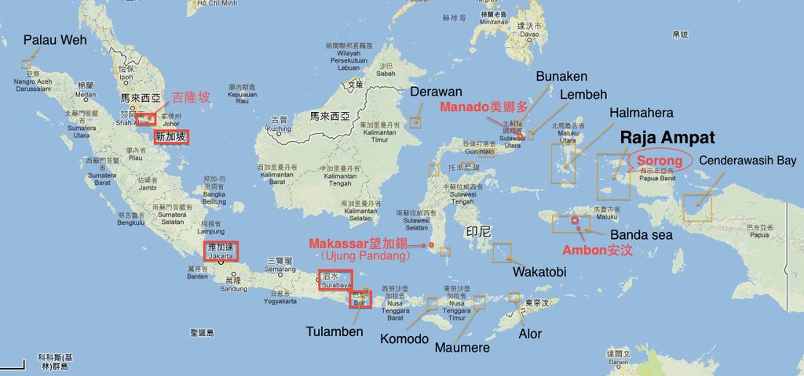
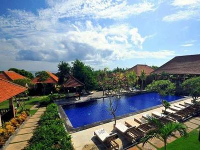
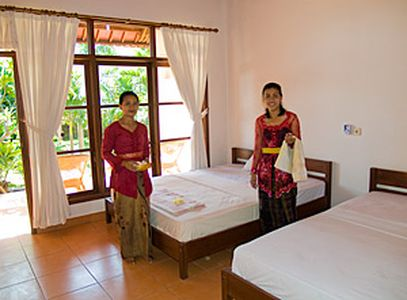
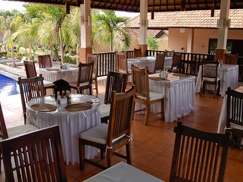
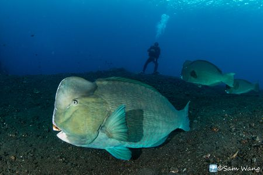
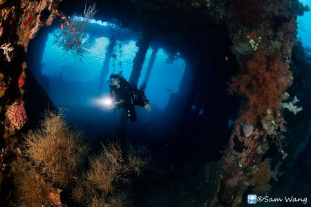
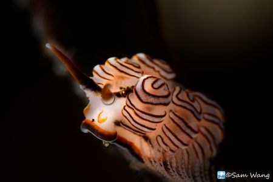
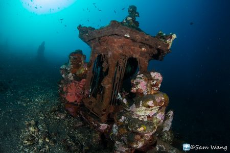

【景點介紹】 |
|
印尼 印度尼西亞共和國，簡稱印尼，為東南亞國家；約由17,508個島嶼組成，是世界上最大的群島國家，疆域橫跨亞洲及大洋洲，別稱「萬島之國」也是東南亞最大的國家。印度尼西亞人口超過2.58億，為世界上人口第四多的國家。五個最大的島嶼分別是蘇門答臘島(Sumatra)、爪哇島(Java)、加里曼丹島(Kalimantan台灣俗稱：婆羅洲Borneo)、蘇拉威西島(Sulawesi)與巴布亞島(Papua)。首都是在爪哇島上的雅加達(Jakarta)。 |
|  |
|
氣候 印尼地處赤道周邊，屬於熱帶性氣候，一年四季都是夏天的氣溫，根據季風而分成乾、濕季，11月到3月雨季時，幾乎天天都是暴雨，濕度非常高，4月到10月乾季時，整天都是烈日當空，非常炎熱。 |
|
人文 印尼有300多個民族及七百多種方言，南島語族後裔與爪哇族為最大族群，但七成的商業與財富都掌握在僅占3~4%的印尼華人手上，因此曾長期發生排華運動。官方語言為印尼語，約90%的人都篤信伊斯蘭教，其他像基督教、天主教、印度教、佛教則佔少數(峇里島較特別，以印度教為主，伊斯蘭教則為少數)。由於大量的穆斯林的關係，飲食方面很少機會吃到豬肉，大部分以雞肉、牛肉、海鮮為主。而隨處可見的清真寺，會在一天中固定五次的禱告膜拜時間發送禱告誦經，不管在屋內還是走路都能聽到這些禱告聲，初次來印尼的可能會不習慣在半夜4~5點日出前就被晨禮的誦經聲吵醒了。 |
|
地點 Bali峇里島，是印尼34個行政區之一，也是著名的旅遊勝地。全島大部分為山地，有四座以上的錐形火山峰，最高峰阿貢火山最為有名，也是仍在活動期的活火山。與台灣沒有時差，從台灣飛過去的路程大約為5小時。11月至隔年的3月為雨季，吹西北季風，4月至10月為乾季，也是最適合來此旅遊的時間點。一般來峇里島潛水都是到東北區的土蘭奔(Tulamben)看看自由號沈船與微距或者是去東南邊的三個小島(Nusa Penida, Cenningan island與Nusa Lembongan)看翻車魚(僅8~10月有機會)。 |
||||
|  |  |  | ||
| Liberty Dive Resort擁有32間的獨棟木屋、花園、三個泳池，為您提供最乾淨舒適的住宿空間，有冷氣、Wifi，讓所有住宿的貴賓能夠放鬆心情，盡情享受渡假的悠閒，著名的潛點幾乎都以輕鬆的岸潛方式就可到達，還有人幫忙組裝與扛裝備的優質服務，每一潛結束就可以到泳池邊喝冰茶、吃點水果、泡泡泳池的水，馬上就可以恢復體力繼續下一支潛水，讓每一支都成為享受。 | ||||
【著名潛點】 |
| USAT Liberty Shipwreck |
| 自由號沈船離土蘭奔卵石海灘僅40米，沈船長度約120米，船體分佈從深度3米~30米，遍佈各式軟硬珊瑚，雖然沒有很完整的船體，但在一入水淺淺的5M就可以辨識船尾的方向舵，沿著船體往船頭的方向前進，可常見JACKFISH魚群、隆頭鸚哥、梭魚、大石斑、葉魚、鬼龍、金黃色條紋或斑點的石鱸，專門啃珊瑚的隆頭鶯歌群，在深度較大的海扇上也住著豆丁海馬，這是個微距廣角都能拍到佳作的潛點。 |
| Coral Garden |
| 位於自由號沈船與斷層之間的一片長長的淺礁區，就是珊瑚花園，她是一片具有豐富生物的沙礁混合區，十字鬼龍、五彩鰻、三棘高身鮋、笛鯛、龍占魚都可以在這兒發現。 |
| Seraya Secrets |
| 在土藍奔東南部的一個海灣，是一個非常著名的微距潛水地點，表面上看起來是個其貌不樣的地方，因為一下水就是整片的黑沙地，缺乏主要的珊瑚，但是各式蛙蛙魚、十字鬼龍、海鰻、獅子魚、海葵蝦、海馬、花枝、秘密客、各式的海蛞蝓…..就是一個微距的天堂。 |
|  |  |
【建議行程】 |
|
第一天 台北／峇里島~ TULAMBEN CI-771 0915/1420 集合於桃園機場，飛行約五個多小時，抵達美麗的渡假島嶼～峇里島，抵達後專車接往潛水聖地－TULAMBEN辦理CHECK IN手續。 |
|
第二天 (4支岸潛) 享用早餐後，於TULAMBAN沉船或附近潛點潛水，潛水的空檔回到渡假村可以泡在泳池裡享受著冰涼的飲料與水果，午餐與晚餐皆在飯店享用，餐後可自由活動。 |
|
第三天 (3支岸潛+1支夜潛) 享用早餐後，於TULAMBAN沉船或附近潛點潛水，潛水的空檔回到渡假村可以泡在泳池裡享受著冰涼的飲料與水果，午餐與晚餐皆在飯店享用，餐後可自由活動。 |
|
第四天 (2支岸潛) 享用早餐後，於TULAMBAN沉船或附近潛點潛水，潛水的空檔回到渡假村可以泡在泳池裡享受著冰涼的飲料與水果，午餐與晚餐皆在飯店享用，餐後可自由活動。 |
|
第五天 峇里島／台北 CI-772 1530/2040 享用早餐後，在依依不捨的告別聲中結束此難忘的巴里島潛水之旅，搭乘接駁專車前往機場搭機途中會在先在市區享用午餐，再返回溫暖的家。 |
|  |  |
|
| 主辦單位 | 愛潛水股份有限公司 | 承辦人：愛潛水 | 行動電話：0909-097696 |
| TEL：02-2882-7696 | FAX：02-2882-7656 | ||
| E-MAILl：info@idiving.com.tw | |||
| 地址：台北市士林區前港街8號 | |||
| 協辦單位 | 萬陽旅行社有限公司 | 業務請洽：蘇恒璀 | 行動電話：0937-196518 |
| TEL：02-2517-1333 | FAX：02-2508-1537 | ||
| E-MAIL：tracy410@ms45.hinet.net | |||
| 地址：台北市南京東路3段91號四樓之三 | |||